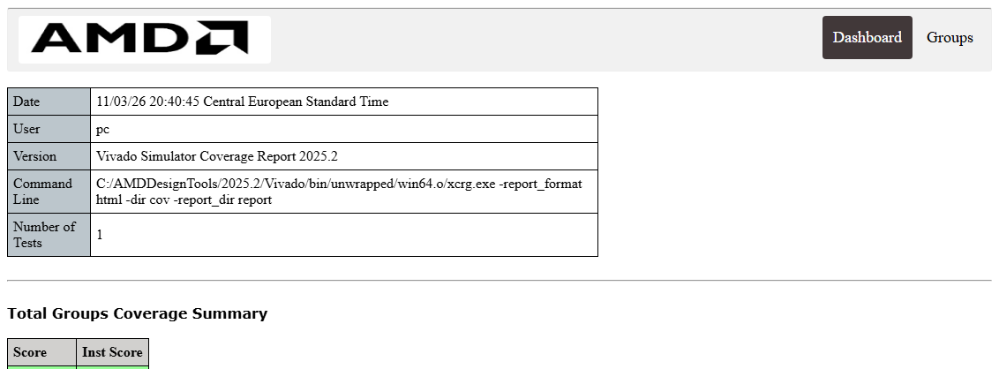
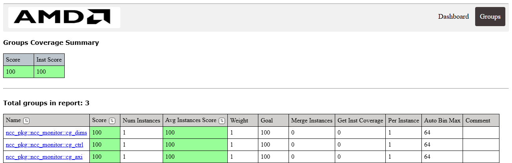
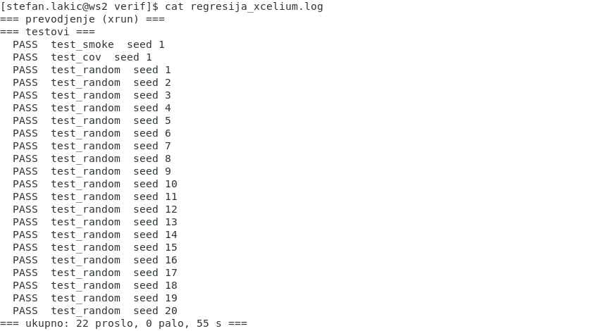

Predmet verifikacije je IP jezgro ncc_accel: hardverski akcelerator normalizovane unakrsne korelacije (NCC), projektovan u okviru predmeta Projektovanje složenih digitalnih sistema za prepoznavanje šahovskih figura. Jezgro je opisano u VHDL-u. Ovaj dokument opisuje verifikaciono okruženje napisano u SystemVerilog-u po UVM metodologiji, koje se pokreće u Vivado XSim-u i u Cadence Xcelium-u.
Verifikacija je na IP nivou: DUT je ncc_accel sa oba magistralna interfejsa, AXI4-Lite (S00) za kontrolne registre i AXI4-Full (S01) za memorije slike, šablona i rezultata. To je ista konfiguracija koja se integriše u sistem na ploči. Računsko jezgro ncc_core je ranije provereno na nivou RTL-a, pa je ovde težište na tome da DUT ispravno radi kada se pobuđuje preko magistrala, kao što ga koristi procesor.
Ovo je druga verzija okruženja. Prva verzija koristila je konstrukcije koje nisu obrađene na vežbama (SVA tvrdnje, clocking blokove, virtuelni sekvencer i drugo) i bila je raspoređena u oko šezdeset fajlova. Nova verzija koristi isključivo elemente obrađene na vežbama 1–13 i ima 13 SystemVerilog fajlova. Cilj verifikacije, DUT i plan pokrivenosti su isti; promenjena je samo implementacija okruženja.
| Stavka | Vrednost |
|---|---|
| DUT | ncc_accel (VHDL-2008), zamrznuta kopija u rtl/ |
| Jezik okruženja | SystemVerilog, UVM 1.2 |
| Simulator 1 | Vivado XSim 2025.2 (UVM 1.2 uz Vivado) |
| Simulator 2 | Cadence Xcelium 19.03 (UVM uz Xcelium) |
| Takt u simulaciji | 100 MHz (perioda 10 ns) |
| Pokretanje | ./regression.sh, za oba simulatora |
Akcelerator računa mapu NCC² između slike (do 90×90 piksela) i šablona (do 30×30 piksela). Procesor upisuje sliku i šablon u memorije preko S01, dimenzije u registre preko S00, pokreće obradu upisom u CTRL i čeka da bit done u registru STATUS postane 1. Mapa rezultata se zatim čita sa S01.
Adresna magistrala S00 je široka šest bita, pa su važeće samo adrese 0x00–0x3F. Okruženje koristi šest registara (Tabela 2).
| Adresa | Registar | Opis |
|---|---|---|
0x00 | IMG_W | širina slike, bitovi 7:0 |
0x04 | IMG_H | visina slike, bitovi 7:0 |
0x08 | TMP_W | širina šablona, bitovi 7:0 |
0x0C | TMP_H | visina šablona, bitovi 7:0 |
0x10–0x2C | — | registri bez dejstva u jezgru: upis pa čitanje vraća upisano |
0x30 | CTRL | upis sa bitom 0 = 1 pokreće obradu i briše done |
0x34 | STATUS | bit 0 = done (ostaje 1 do sledećeg starta), bit 1 = busy; samo čitanje |
S01 ima 17-bitnu adresu (128 KB). Bitovi 16:15 biraju oblast, a bitovi 14:2 reč unutar oblasti. Jedan piksel zauzima jednu 32-bitnu reč (Tabela 3).
| Oblast | Pomeraj | Ponašanje |
|---|---|---|
| slika | +0x00000 | 8192 reči; pamti se samo donjih 8 bita podatka |
| šablon | +0x08000 | dekoder koristi 10 bita adrese, pa se sadržaj ponavlja na svakih 1024 reči |
| rezultat | +0x10000 | NCC² u formatu Q1.31; samo čitanje, upis se zanemaruje uz odgovor OKAY |
| nemapirano | +0x18000 | čitanje vraća nule, upis nema efekta |
Jezgro podržava sliku od 1×1 do 90×90 i šablon od 1×1 do 30×30, pri čemu šablon ne sme biti veći od slike. Za veće vrednosti ncc_core.vhd prekida simulaciju (VHDL assert sa nivoom failure). Sve sekvence u okruženju zato generišu samo dozvoljene dimenzije. Mapa rezultata ima (širina slike − širina šablona + 1) × (visina slike − visina šablona + 1) vrednosti, red po red.
Struktura okruženja prikazana je na slici 1. Okruženje ima jedan agent koji vozi obe magistrale. Transakcija (ncc_item) sama nosi informaciju da li ide na S00 ili na S01, pa jedna sekvenca na jednom sekvenceru može redom da upiše sliku u memoriju, dimenzije u registre, pokrene jezgro i pročita rezultat. Zbog toga nije potreban virtuelni sekvencer, a test pokreće sekvencu direktno na sekvenceru agenta, kao u vežbama 6–10.
ncc_if; monitor uzorkuje iste signale, sakuplja pokrivenost i šalje transakcije scoreboard-u.Svaka klasa je u svom fajlu, a paket ncc_pkg ih uključuje direktivom `include, isto kao paketi u vežbama 9 i 10. Spisak fajlova dat je u tabeli 4.
| Fajl | Sadržaj | Linija |
|---|---|---|
sv/ncc_if.sv | interfejs sa signalima S00 i S01 | 70 |
sv/ncc_pkg.sv | konstante (adrese registara, oblasti S01), tipovi, uključivanje klasa | 40 |
sv/ncc_item.sv | transakcija: jedan upis ili čitanje na S00 ili S01 | 36 |
sv/ncc_config.sv | konfiguracija agenta (aktivan/pasivan) | 14 |
sv/ncc_sequencer.sv | sekvencer | 10 |
sv/ncc_driver.sv | drajver za obe magistrale | 168 |
sv/ncc_monitor.sv | monitor i tri covergroup-e | 269 |
sv/ncc_agent.sv | agent: drajver, sekvencer, monitor | 35 |
sv/ncc_scoreboard.sv | scoreboard i referentni model NCC² | 185 |
sv/ncc_env.sv | okruženje: agent i scoreboard | 24 |
sv/ncc_sequences.sv | osnovna, smoke, cov i random sekvenca | 364 |
sv/ncc_tests.sv | test_base i tri testa | 92 |
sv/ncc_top.sv | takt, reset, DUT, pokretanje testa | 101 |
run.f | spisak izvornih fajlova za oba simulatora | 10 |
regression.sh | prevođenje, svi testovi, izveštaj pokrivenosti | 92 |
Tabela 5 pokazuje odakle potiče svaka konstrukcija koja se koristi u okruženju. Nijedna konstrukcija nije van gradiva vežbi.
| Konstrukcija | Gde se koristi | Vežba |
|---|---|---|
interface, @(posedge vif.clk iff ...), <= | interfejs, drajver, monitor | 5, 6, 8, 13 |
uvm_sequence_item, uvm_field_* | transakcija, konfiguracija | 6, 9 |
uvm_sequencer, uvm_driver, get_next_item/item_done | sekvencer, drajver | 6, 7 |
uvm_monitor, uvm_analysis_port | monitor | 8 |
uvm_agent, is_active, uvm_config_db | agent, test, top | 9 |
uvm_scoreboard, uvm_analysis_imp, report_phase | scoreboard | 8, 10 |
covergroup, coverpoint, bins, cross, ignore_bins, sample() | monitor | 11, 13 |
rand, constraint, dist, inside, ->, randomize() with | transakcija, sekvence | 4 |
fork / join | drajver: kanali AW i W upisa | 3 |
dinamički nizovi, redovi [$], asocijativni nizovi | monitor, scoreboard, sekvence | 2 |
start_item/finish_item, raise_objection | sekvence, testovi | 6 |
$urandom_range, -sv_seed/-svseed, regresija | random sekvenca, regression.sh | 12 |
xcrg izveštaj pokrivenosti | regression.sh | 11 |
ncc_if sadrži sve signale obe magistrale, sa fiksnim širinama: 6-bitna adresa za S00 i 17-bitna za S01. Interfejs ne sadrži nikakvu logiku, isto kao interfejsi u vežbama. Instancira se u modulu ncc_top, povezuje sa portovima DUT-a i prosleđuje komponentama preko uvm_config_db pod imenom "ncc_if".
ncc_item opisuje jedan prenos (Tabela 6). Polja order i gap su slučajna i biraju redosled kanala pri upisu; ostala polja postavlja sekvenca.
| Polje | Tip | Značenje |
|---|---|---|
bus | bus_e | BUS_S00 ili BUS_S01 |
rw | rw_e | WRITE ili READ |
addr | bit [16:0] | S00: adresa registra; S01: bajtska adresa (oblast·0x8000 + reč·4) |
len | int unsigned | broj reči (beat-ova); za S00 uvek 1 |
data | bit [31:0] data[] | podaci: za upis ih zadaje sekvenca, za čitanje ih popunjava drajver |
strb | bit [3:0] | WSTRB pri upisu |
resp | bit [1:0] | BRESP ili RRESP, popunjava drajver/monitor |
order | rand order_e | ORDER_AW_FIRST : ORDER_W_FIRST : ORDER_SIMUL = 2 : 2 : 1 |
gap | rand int unsigned | kašnjenje drugog kanala u taktovima: 0 za SIMUL, inače 1–4 |
Ograničenja su napisana kao u vežbi 4:
constraint c_order { order dist {ORDER_AW_FIRST := 2, ORDER_W_FIRST := 2, ORDER_SIMUL := 1}; }
constraint c_gap { order == ORDER_SIMUL -> gap == 0;
order != ORDER_SIMUL -> gap inside {[1:4]}; }ncc_config ima jedno polje, is_active. Test pravi konfiguraciju i postavlja je u uvm_config_db; agent je preuzima i, ako je aktivan, pravi drajver i sekvencer. U pasivnom režimu agent ima samo monitor. ncc_sequencer je običan uvm_sequencer #(ncc_item).
Drajver uzima transakcije jednu po jednu (get_next_item / item_done) i, prema poljima bus i rw, poziva jedan od četiri taska: upis i čitanje na S00, upis i čitanje burst-a na S01. Signali se postavljaju neblokirajućom dodelom, a na odgovor se čeka sa @(posedge vif.clk iff ...), kao u APB drajveru iz vežbe 13.
Kod upisa, adresni kanal (AW) i podatkovni kanal (W) rade u dve niti unutar fork ... join. Nit koja kreće druga čeka gap taktova. Tako se dobijaju tri redosleda (slika 2): AW pre W, W pre AW i oba istovremeno. Redosled je važan jer je raniji S00 visio kada podatak (W) stigne pre adrese (AW); zato je provera sva tri redosleda u svakoj oblasti centralni cilj plana pokrivenosti.
gap taktova; signal se spušta posle rukovanja (READY).Čitanje je jednostavnije: postavlja se ARVALID, posle rukovanja RREADY, i prima se jedna reč (S00) ili len reči (S01). Na S01 se uvek koristi INCR burst sa 4 bajta po beat-u; ostala polja kanala (ID, CACHE, PROT, QOS) su nule.
Monitor na svaku uzlaznu ivicu takta poziva dve funkcije, collect_s00() i collect_s01(), koje gledaju signale interfejsa i sklapaju transakcije:
cycle);item_collected_port scoreboard-u.Monitor proverava i jedno pravilo protokola: popravljeni DUT nikada ne podiže AWREADY i WREADY u istom taktu. Ako se to desi, prijavljuje uvm_error sa porukom da se vratio AW/W bug. Ova provera je napisana kao običan if, bez tvrdnji (assert), koje nisu u gradivu.
Pokrivenost se prikuplja u samom monitoru, kao u APB monitoru iz vežbe 13. Tri covergroup-e opisane su u tabeli 7. Uzorkuju se pozivom sample() u trenutku kada je odgovarajuća transakcija sklopljena:
cg_axi — na svaki završen upis (S00 i S01);cg_ctrl — na svaki upis u CTRL, sa vrednostima busy i done iz poslednjeg pročitanog STATUS-a;cg_dims — na svaki upis 1 u CTRL, sa poslednjim upisanim dimenzijama.| Covergroup | Tačka / ukrštanje | Bin-ovi | Šta se proverava |
|---|---|---|---|
cg_dims | cp_img_w | 1 | 2–44 | 45 | 46–89 | 90 | širina slike, uz granice i vrednost 45 (umanjena slika polja) |
cp_img_h | isto kao širina | visina slike | |
cp_tmp_w | 1 | 2–14 | 15 | 16–29 | 30 | širina šablona | |
cp_tmp_h | isto kao širina | visina šablona | |
x_img_tmp | 19 (od 25; 6 nemogućih isključeno) | kombinacije širine slike i šablona; šablon ≤ slika | |
cg_ctrl | cp_start | 0 | 1 | upis 0 ili 1 u CTRL |
cp_busy | 0 | 1 | jezgro zauzeto u trenutku upisa | |
cp_done | 0 | 1 | done postavljen u trenutku upisa | |
x_start_busy | 4 | uključujući start dok jezgro radi (test T7) | |
x_start_done | 4 | uključujući upis 0 posle završenog posla | |
cg_axi | cp_order | AW_FIRST | W_FIRST | SIMUL | redosled kanala |
cp_region | s00 | image | template | result | unmapped | odredište upisa | |
x_order_region | 15 | sva tri redosleda u svakoj oblasti — centralni cilj plana | |
cp_len | 1 | 2 | 3–15 | 16–255 | 256 | dužina burst-a, uz najduži dozvoljeni (256) | |
cp_strb | full (F) | 1 | 3 | 9 | other | WSTRB, uključujući upis bez bita 0 |
Ukrštanje x_img_tmp isključuje kombinacije koje ne mogu da se pojave jer šablon ne sme biti veći od slike, pomoću ignore_bins i binsof (vežba 11):
x_img_tmp : cross cp_img_w, cp_tmp_w {
ignore_bins impossible_min = binsof(cp_img_w.min) && !binsof(cp_tmp_w.min);
ignore_bins impossible_below = binsof(cp_img_w.below) &&
(binsof(cp_tmp_w.above) || binsof(cp_tmp_w.max));
}ncc_agent pravi monitor uvek, a drajver i sekvencer samo u aktivnom režimu, i povezuje drv.seq_item_port sa seqr.seq_item_export. ncc_env pravi agent i scoreboard i povezuje agent.mon.item_collected_port sa scbd.item_collected_imp. Struktura je ista kao u vežbi 10.
Scoreboard dobija isključivo transakcije koje je monitor video na magistralama (slika 3). Od njih gradi sopstvenu kopiju memorije slike i šablona (senku), pamti dimenzije, pri pokretanju jezgra računa očekivanu mapu rezultata i svako čitanje oblasti rezultata poredi sa njom.
Referentni model, funkcija ncc_model(), računa isto što i ncc_core.vhd. Za svaki položaj prozora (u, v) računa se srednja vrednost prozora slike f̄ i šablona t̄ (celobrojno, sa zaokruživanjem: (zbir + n/2) / n), pa
Rezultat je u formatu Q1.31: 0x80000000 znači 1,0, odnosno savršeno poklapanje. Ako je jedan od imenilaca nula (ravan prozor ili ravan šablon), rezultat je 0. Zbirovi se računaju u int, kvadrat brojioca i proizvod imenilaca u longint, a deljenje sa pomeranjem za 31 bit u 83-bitnom vektoru, jer međurezultat ne staje u 64 bita. Model je bit-tačan: u celoj regresiji nijedno od 3398 poređenja nije dalo razliku.
Scoreboard zna i za jedno ponašanje DUT-a otkriveno tokom verifikacije: upis u CTRL dok jezgro radi jezgro ignoriše (nalaz N2, poglavlje 10). Zato se u tom slučaju nova predikcija ne računa. Na kraju simulacije, u report_phase, scoreboard prijavljuje grešku ako nije uporedio nijedan rezultat; time se sprečava da test prođe samo zato što ništa nije provereno.
Modul ncc_top generiše takt od 100 MHz i reset aktivan na nuli u trajanju od 10 taktova, instancira interfejs i DUT, postavlja virtuelni interfejs u uvm_config_db i poziva run_test(). Ime testa bira se argumentom +UVM_TESTNAME. Ako simulacija ne završi za 50 ms simulacionog vremena, prekida se sa uvm_fatal.
ncc_base_seq sadrži pomoćne taskove koje koriste ostale sekvence (Tabela 8).
| Task / funkcija | Šta radi |
|---|---|
reg_write(addr, data, ord) | upis jednog registra na S00, sa zadatim redosledom AW/W |
reg_read(addr, data) | čitanje jednog registra sa S00 |
mem_write(region, word, d[], ord, strb) | upis niza reči na S01; veći niz deli na burst-ove |
mem_read(region, word, n, d[]) | čitanje n reči sa S01, takođe podeljeno na burst-ove |
burst_len(word, remaining) | najviše 256 beat-ova i bez prelaska granice od 4 KB (1024 reči) |
wait_done(ok) | čita STATUS dok nije done = 1 i busy = 0; posle 200 000 čitanja javlja grešku |
run_job(iw, ih, tw, th) | upis dimenzija, start, čekanje i čitanje cele mape rezultata |
random_order() | slučajan redosled AW/W za random sekvencu |
Deljenje na burst-ove je posledica pravila AXI4: burst ima najviše 256 beat-ova i ne sme preći granicu od 4 KB. Slika od 400 piksela tako ide kao jedan burst od 256 i jedan od 144 reči.
Svaki posao akceleratora u sekvencama ima isti tok, prikazan na slici 4.
Testovi nasleđuju test_base, koji pravi konfiguraciju i okruženje i štampa topologiju. Svaki test u run_phase podiže objection, pokreće svoju sekvencu na env.agent.seqr i spušta objection (Tabela 9).
| Test | Sekvenca | Šta proverava |
|---|---|---|
test_smoke | ncc_smoke_seq | ceo put kroz DUT na slici 4×4 i šablonu 2×2; šablon je jednak prozoru na (1,1), pa tu mora biti tačno 0x80000000, a svih ostalih 8 vrednosti manje |
test_cov | ncc_cov_seq | usmereni slučajevi koji zatvaraju ceo plan pokrivenosti i proveravaju ponašanje memorija i registra CTRL (Tabela 10); 24 posla akceleratora |
test_random | ncc_random_seq | slučajne dimenzije (slika 2–24, šablon 1–6), slučajni podaci, slučajni redosled kanala, slučajna čitanja i upisi u nekorišćene registre; menja se sa seed-om |
Pored pokrivenosti, ncc_cov_seq proverava i konkretna ponašanja DUT-a. Te provere su u samoj sekvenci, jer porede pročitano sa onim što je sekvenca nameravala da upiše (Tabela 10).
| Slučaj | Očekivano ponašanje | Nalaz |
|---|---|---|
| upis 0 u CTRL pre ikakvog posla | jezgro se ne pokreće (busy = 0) | N2 |
| čitanje šablona na reči 1024 | isto kao reči 0–3 (ponavljanje na 1024 reči) | N3 |
upis 0xABCDEF5A u sliku | čitanje vraća 0x0000005A | N3 |
| upis sa WSTRB = 0xE | memorija se ne menja | N3 |
| burst-ovi dužine 1, 2, 3, 16, 144 i 256 | scoreboard poredi rezultate posla nad tim podacima | N4 |
| 19 kombinacija širina + 4 kombinacije visina | scoreboard poredi celu mapu svakog posla | — |
| upis 0, pa ponovo 1 u CTRL dok jezgro radi (T7) | jezgro ignoriše oba upisa; rezultat je od prvog starta | N2 |
| upis 0 u CTRL posle završenog posla | done ostaje 1 | N2 |
| upis u oblast rezultata, sva tri redosleda | mapa poslednjeg posla ostaje ista | N3 |
| upis i čitanje nemapirane oblasti | čitanje vraća nule | N3 |
Posle pune regresije, baze pokrivenosti svih 22 pokretanja spajaju se alatom xcrg. Ukupna funkcionalna pokrivenost je 100%: sve tri covergroup-e, sve tačke i sva tri ukrštanja (Tabela 11). Cilj iz verifikacionog plana bio je 100% na ukrštanju redosled × oblast i najmanje 90% ukupno.
| Covergroup | Tačka / ukrštanje | Pokriveno bin-ova | % |
|---|---|---|---|
cg_dims | cp_img_w, cp_img_h | 5 / 5, 5 / 5 | 100 |
cp_tmp_w, cp_tmp_h | 5 / 5, 5 / 5 | 100 | |
x_img_tmp | 19 / 19 | 100 | |
cg_ctrl | cp_start, cp_busy, cp_done | 2 / 2 svaka | 100 |
x_start_busy, x_start_done | 4 / 4, 4 / 4 | 100 | |
cg_axi | cp_order | 3 / 3 | 100 |
cp_region | 5 / 5 | 100 | |
x_order_region | 15 / 15 | 100 | |
cp_len | 5 / 5 | 100 | |
cp_strb | 4 / 4 | 100 |
Izveštaj se pravi kao u vežbi 11: xcrg -report_format html -dir cov -report_dir report. Alat učitava baze svih 22 pokretanja iz direktorijuma cov (svaki test upisuje svoju bazu pod imenom <test>_s<seed>) i od njih pravi jedan spojeni izveštaj, zato na početnoj strani piše „Number of Tests: 1”. Početna strana izveštaja (dashboard.html) prikazana je na slici 5, a spisak covergroup-a na slici 6. Klikom na ime covergroup-e otvara se stanje svake tačke i svakog bin-a.

xcrg posle cele regresije (Vivado XSim 2025.2).
Tabela 12 pokazuje koliko pokrivenosti daje svaka grupa testova sama. Usmereni test test_cov sam zatvara ceo plan. Slučajni test pokriva manje, jer su dimenzije namerno ograničene na male vrednosti da simulacija bude brza; njegova uloga je da sa različitim podacima i redosledima proveri da se DUT i referentni model slažu.
| Grupa | Pokretanja | cg_dims | cg_ctrl | cg_axi | Ukupno |
|---|---|---|---|---|---|
test_smoke | 1 | 17,1% | 40,0% | 55,7% | 37,6% |
test_random | 20 | 26,1% | 40,0% | 69,0% | 45,0% |
test_cov | 1 | 100% | 100% | 100% | 100% |
| cela regresija | 22 | 100% | 100% | 100% | 100% |
Regresija se pokreće jednom komandom, ./regression.sh (slika 7). Skripta prevodi DUT i okruženje jednom, pokreće test_smoke i test_cov sa seed-om 1 i test_random sa seed-ovima 1–N (podrazumevano 20), za svaki test proverava log i na kraju spaja pokrivenost. Test je prošao ako u izveštaju UVM-a nema nijedne greške (UVM_ERROR) ni fatalne greške (UVM_FATAL) i ako VHDL nije prekinuo simulaciju.
regression.sh.Rezultati regresije na Vivado XSim-u dati su u tabeli 13. Prošlo je 22 od 22 pokretanja, sa ukupno 3398 poređenja rezultata i nijednom greškom. Cela regresija, sa prevođenjem i izveštajem pokrivenosti, traje oko 113 s.
| Test | Seed | Slika / šablon | Poređenja | Sim. vreme [µs] | Ishod |
|---|---|---|---|---|---|
test_smoke | 1 | 4×4 / 2×2 | 9 | 12,0 | PASS |
test_cov | 1 | 24 posla (Tabela 10) | 1250 | 1521,9 | PASS |
test_random | 1 | 17×16 / 3×5 | 180 | 242,5 | PASS |
test_random | 2 | 17×16 / 2×6 | 176 | 232,8 | PASS |
test_random | 3 | 8×24 / 2×5 | 140 | 181,4 | PASS |
test_random | 4 | 23×22 / 6×6 | 306 | 478,2 | PASS |
test_random | 5 | 20×11 / 6×6 | 90 | 145,2 | PASS |
test_random | 6 | 8×15 / 5×4 | 48 | 70,1 | PASS |
test_random | 7 | 21×6 / 6×4 | 48 | 72,4 | PASS |
test_random | 8 | 15×19 / 2×5 | 210 | 270,7 | PASS |
test_random | 9 | 7×23 / 4×3 | 84 | 113,3 | PASS |
test_random | 10 | 8×16 / 6×1 | 48 | 63,8 | PASS |
test_random | 11 | 11×13 / 1×4 | 110 | 135,9 | PASS |
test_random | 12 | 2×13 / 1×3 | 22 | 28,0 | PASS |
test_random | 13 | 3×11 / 2×3 | 18 | 25,0 | PASS |
test_random | 14 | 23×8 / 1×2 | 161 | 193,2 | PASS |
test_random | 15 | 9×17 / 4×2 | 96 | 123,6 | PASS |
test_random | 16 | 17×18 / 5×5 | 182 | 265,5 | PASS |
test_random | 17 | 9×9 / 6×3 | 28 | 41,7 | PASS |
test_random | 18 | 5×14 / 2×4 | 44 | 57,6 | PASS |
test_random | 19 | 13×16 / 6×1 | 128 | 162,4 | PASS |
test_random | 20 | 12×5 / 3×4 | 20 | 29,7 | PASS |
Test koji prolazi dokazuje nešto samo ako bi pao kada je DUT neispravan. Zato je okruženje provereno i namernim unošenjem greške, u kopiji izvornih fajlova (Tabela 14).
| Izmena | Gde | Rezultat |
|---|---|---|
zaokruživanje srednje vrednosti šablona izbačeno (count / 2 → 0) | rtl/ncc_core.vhd | test_cov: 307 grešaka od 1250 poređenja; test_random: 156/176 i 140/140 grešaka — scoreboard hvata grešku u DUT-u |
svaki podatak upisa na S01 izmenjen (wdata ^ 1) | sv/ncc_driver.sv | test_cov pada (provere u sekvenci); scoreboard ne prijavljuje grešku |
Drugi slučaj je očekivan i važan za razumevanje okruženja. Greška je u pobudi, a ne u DUT-u: monitor na magistrali vidi izmenjen podatak, scoreboard gradi senku memorije od onoga što je video i predviđa rezultat za te podatke, a DUT za iste podatke daje isti rezultat. Scoreboard proverava da DUT ispravno obrađuje ono što mu je stvarno poslato; da je poslato ono što je sekvenca nameravala, proveravaju poređenja u sekvenci test_cov.
Ista lista fajlova (run.f), isti testovi i ista provera loga koriste se na oba simulatora; skripta se razlikuje samo po komandama za prevođenje i pokretanje (Tabela 15).
| Vivado XSim 2025.2 | Cadence Xcelium 19.03 | |
|---|---|---|
| Prevođenje | xvhdl -2008, xvlog -sv -L uvm, xelab | xrun -elaborate -v200x -relax -uvm |
| Pokretanje testa | xsim -R sa -testplusarg UVM_TESTNAME=… i -sv_seed | xrun -R +UVM_TESTNAME=… sa -svseed |
| Pokrivenost | -cov_db_name, izveštaj alatom xcrg (vežba 11) | -coverage functional, -covtest; baze u cov_work/ |
| Komanda | ./regression.sh | SIM=xrun ./regression.sh |
| Rezultat nove verzije | 22 / 22 PASS | 22 / 22 PASS |
| Trajanje regresije | oko 113 s | 55 s |
| Poređenja rezultata | 3398 | 3925 |
| Izveštaj pokrivenosti | 100% (slike 5 i 6) | nije napravljen: alat imc nije instaliran na mašini |
Ishod je isti na oba simulatora: svih 22 pokretanja prolazi, bez ijedne greške scoreboard-a (slika 8). Broj poređenja nije isti jer test_random sa istim seed-om ne dobija iste slučajne vrednosti na dva simulatora: svaki simulator ima svoj generator slučajnih brojeva, pa isti seed daje druge dimenzije slike i šablona. Testovi test_smoke i test_cov ne zavise od seed-a. Pokrivenost se u Xcelium-u prikuplja (-coverage functional, baze su u cov_work/scope/), ali se izveštaj od njih pravi Cadence alatom imc, koji na fakultetskoj mašini nije instaliran; zato je izveštaj pokrivenosti napravljen u Vivado-u.

SIM=xrun ./regression.sh).Na Windows-u su Vivado alati .bat fajlovi, koji argument oblika ime=vrednost dele na dva argumenta. Zato skripta opcije za xsim upisuje u fajl i prosleđuje ih sa -f.
Prva verzija okruženja prošla je na oba simulatora sa istim ishodom. Tada su pronađene tri razlike između alata, sve u VHDL-u DUT-a (ncc_accel_slave_lite_v1_0_S00_AXI.vhd i S01 šablon), ne u SystemVerilog kodu (Tabela 16). Rešenja su ugrađena u regression.sh i u kopiju RTL-a, pa važe i za novu verziju.
| Greška u Xcelium-u | Uzrok | Rešenje | Dira DUT? |
|---|---|---|---|
*E,AGNLSC | agregat (0 => …, others => "0") nad opsegom izračunatim iz generika | xrun -relax | ne |
*E,CSODAS | case nad podtipom koji nije lokalno statičan | deklaracija promenjena u jednom redu, ista širina | samo kopija u rtl/ |
*E,TRRANGEC | integer bez početne vrednosti u nultom delta-koraku S01 šablona | set rangecnst_severity_level warning | ne |
Tokom verifikacije utvrđeno je pet nalaza (Tabela 17). Nijedan nije greška u računu jezgra; to su ponašanja interfejsa koja softver mora da poštuje i razlike između alata.
| # | Nalaz | Kako je proveren |
|---|---|---|
| N1 | Registarska mapa: najveća adresa na S00 je 0x3F; rezultati se čitaju samo sa S01 (+0x10000). Registri 0x10–0x2C pamte upisanu vrednost, ali je jezgro ne koristi. | random test upisuje u 0x10–0x2C; rezultati se uvek čitaju sa S01 |
| N2 | Upis 1 u CTRL dok jezgro radi se tiho ignoriše: S00 generiše start, ali ga jezgro prihvata samo kada nije zauzeto. Odgovor na upis je OKAY, pa softver ne zna da novi posao nije počeo. done je u tom trenutku već 0 (obrisan prvim startom). Upis 0 u CTRL ne pokreće jezgro i ne briše done. | test_cov (T7), ukrštanja x_start_busy i x_start_done |
| N3 | Ponašanje S01: oblast rezultata je samo za čitanje (upis se zanemaruje uz OKAY), šablon se ponavlja na 1024 reči, slika pamti samo 8 bita, nemapirana oblast vraća nule umesto greške (DECERR). | test_cov |
| N4 | Burst duži od 256 beat-ova nije dozvoljen po AXI4; prva verzija pobude slala je celu sliku kao jedan burst i regresija je to otkrila. Sekvence sada dele prenos na 256 beat-ova i granicu od 4 KB. | cp_len, bin b256 |
| N5 | Xcelium strože od XSim-a primenjuje pravila VHDL-a o lokalno statičnim podtipovima (Tabela 16). | dvostruka simulacija |
Nalaz N2 ima direktnu posledicu na Linux drajver (predmet EOS): drajver pre komande start proverava bit busy i odbija komandu greškom EBUSY, umesto da je pošalje jezgru koje bi je ignorisalo.
Verifikacija ncc_accel zatvorena je na IP nivou. Okruženje ima jedan agent za obe magistrale, scoreboard sa bit-tačnim referentnim modelom i tri covergroup-e u monitoru, i koristi isključivo konstrukcije obrađene na vežbama. Regresija na Vivado XSim-u daje 22 od 22 prolaza i 100% funkcionalne pokrivenosti, uz 3398 poređenja rezultata bez ijedne razlike. Namerno uneta greška u DUT otkrivena je u tri od pet pokretanja, sa stotinama prijavljenih neslaganja, čime je pokazano da okruženje zaista proverava rezultat.
Verifikacija je dala i pet nalaza o ponašanju interfejsa i alata (poglavlje 10), od kojih je jedan (N2) uticao na dizajn Linux drajvera. Ista regresija na Cadence Xcelium-u 19.03 daje isti ishod: 22 od 22 prolaza, bez ijedne greške scoreboard-a.
cd verif ./regression.sh # XSim: test_smoke, test_cov, test_random x 20 ./regression.sh 5 # 5 seed-ova za test_random SIM=xrun ./regression.sh # Cadence Xcelium (xrun u PATH-u) VIVADO=/tools/Xilinx/Vivado/2025.2/bin ./regression.sh # druga putanja do Vivada
Ispis skripte za XSim:
=== build (xsim) === === tests === PASS test_smoke seed 1 PASS test_cov seed 1 PASS test_random seed 1 ... PASS test_random seed 20 === total: 22 passed, 0 failed, 114 s === === coverage === Coverage Score :, 100 report: result/report/functionalCoverageReport/dashboard.html
Ispis skripte za Xcelium (SIM=xrun ./regression.sh) prikazan je na slici 8; deo za pokrivenost se tada ne ispisuje.